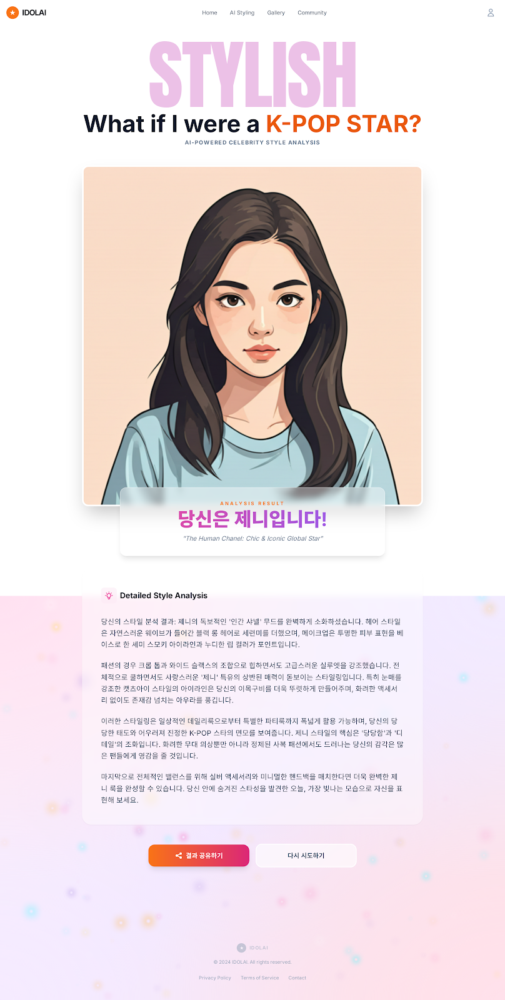

Step 1
Face Scan
얼굴 비율, 눈매, 턱선, 전체 인상에서 핵심 무드를 추출합니다.
AI styling engine
랜딩에서 전달받은 셀카를 기준으로 분위기, 헤어, 메이크업, 패션 키워드를 정리한 뒤 결과 페이지로 넘어가는 중간 단계입니다.
Live processing
잠시 후 결과 페이지로 자동 이동합니다.
Uploaded selfie

샘플 이미지로 미리보기 중
Step 1
얼굴 비율, 눈매, 턱선, 전체 인상에서 핵심 무드를 추출합니다.
Step 2
레이어 컷, 가르마, 컬 강도, 색감까지 아이돌 레퍼런스와 연결합니다.
Step 3
피부 표현, 립 채도, 아이라인 무드를 무대형 또는 데일리형으로 나눕니다.
Step 4
가장 닮은 셀럽과 어울리는 스타일 설명을 카드 리포트 형태로 제공합니다.
